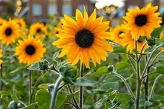

Bunga matahari (Helianthus annuus L.) adalah tumbuhan semusim dari suku kenikir-kenikiran (Asteraceae) yang populer, baik sebagai tanaman hias maupun tanaman penghasil minyak. Bunga tanaman ini sangat khas: besar, biasanya berwarna kuning terang, dengan kepala bunga yang besar (diameter bisa mencapai 30 cm).[2] Bunga ini sebetulnya adalah bunga majemuk, tersusun dari ratusan hingga ribuan bunga kecil pada satu bongkol. Bunga Matahari juga memiliki perilaku khas, yaitu bunganya selalu menghadap / condong ke arah matahari atau heliotropisme. Orang Prancis menyebutnya tournesol atau "pengelana Matahari". Namun, sifat ini disingkirkan pada berbagai kultivar baru untuk produksi minyak karena memakan banyak energi dan mengurangi hasil. Keunikan ini menjadikan bunga matahari tidak hanya indah dipandang, tetapi juga penting secara ekonomi dan ilmiah.